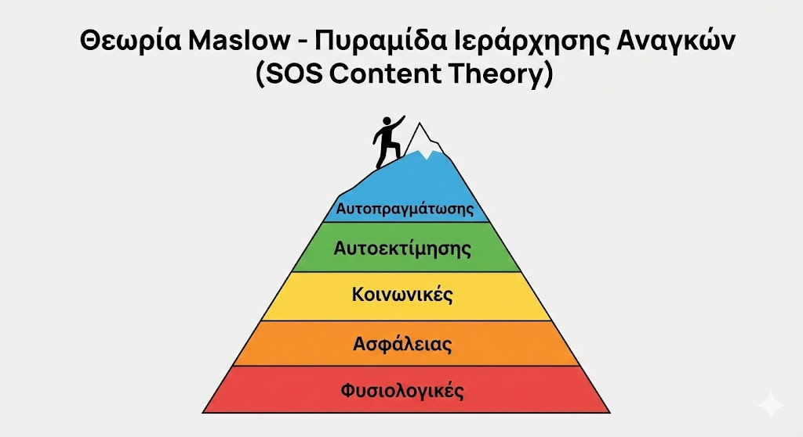

Θεωρία Maslow (Ιεράρχηση Αναγκών)
Η κλασική πυραμίδα 5 επιπέδων. Η παρακίνηση κινείται από κάτω προς τα πάνω. Μόνο οι ανικανοποίητες ανάγκες παρακινούν.
🎯 Για τις Εξετάσεις:
SOS: Η αυτοπραγμάτωση δεν ικανοποιείται ποτέ πλήρως. Αν ζητηθεί κριτική, ανέφερε την έλλειψη ευελιξίας στη σειρά των αναγκών.
